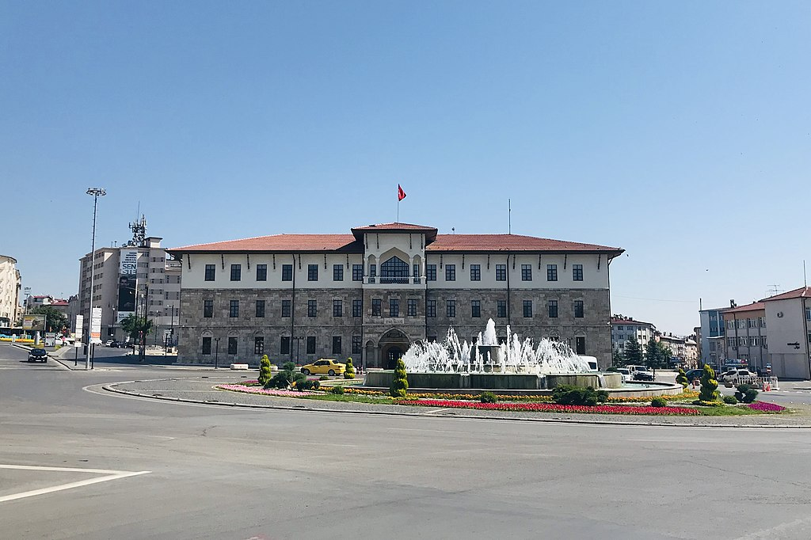

sivas
Sivas, Türkiye'nin Sivas ilinin merkezi olan şehirdir. İç Anadolu Bölgesi'nin en eski ve önemli kentlerinden biridir. Doğusunda Hafik, güneyinde Ulaş ve Altınyayla, güneybatısında Şarkışla, batısında Yıldızeli ilçeleri, Kuzeyden Tokat, Ordu, Giresun, doğudan Erzincan, güneyden Malatya, Kahramanmaraş ve Kayseri, batıdan da Yozgat illeriyle çevrilidir. Sivas merkez ilçe nüfusu 2021 istatistiklerine göre 388.079 kişidir.[1]
Sivas haritası